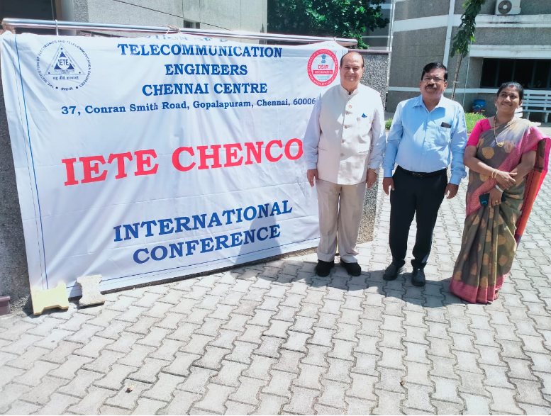

Hybrid Mode- MAY 20 & 21, 2022
"International Conference on Power of Artificial Intelligence and Machine Learning for Human Empowerment"

Scope of the Conference
Recently, the use of AI/ML technology has been exponentially increasing in our daily lives. AI/ML applications represent an important evolution in computer science and data processing that is quickly transforming a vast array of domains. IETE CHENCON 2022 provides vibrant opportunities for the delegates to exchange new ideas, applications, practical challenges encountered and to leverage AI and ML technologies. The technical program of the conference will consist of invited key note talks and paper presentations. IETE CHENCON 2022 accepts technical paper presentation from research scholars, faculty, students and industry professionals in emerging areas of AI and ML applications but not limited to:
Submission Guidelines
Prospective authors are invited to submit full papers describing original, previously unpublished, complete work in four pages in A4 IEEE double column conference template, including figure, results and references. Submitted papers will be reviewed by two to three technical committee or reviewers. Accepted and registered papers of IETE CHENCON 2022 will be published in the conference proceedings. Extended versions of the accepted and presented papers will be recommended for publication in IETE Journals, SCOPUS, SCI and other indexed journals. Authors must submit the papers through their Easy chair account using the following link: https://easychair.org/conferences/?conf=ietechencon2022 or submit the papers to the Email ID: chencon2022@gmail.com
Selected and presented papers will be published in the Journal of Science and Technology (ISSN 2456–5660)
|
|
Patron Prof Wg Cdr P. Prabhakar Organizing Chair Dr. N. Venkateswaran Conference Co-Chairs Mrs. T.J. Jeyaprabha Mr. Arun |
Advisory Committee Dr. J.W. Bakal Dr. K.T.V Reddy Dr. Surendra Pal Prof. K.K. Aggarwal Dr. M.H. Kori Dr. Shiv Kumar Dr. K. Jaya Shankar Col. (Retd) K.S. Chakravarthi Shri. S. Ramaswamy Dr. Swarna Ravindra Babu Dr. Tata Sudhakar |
|
Mobile: 72000 96048 Phone: 044-28350773 Email: chencon2021@gmail.com Website: http://ietechennai.in |